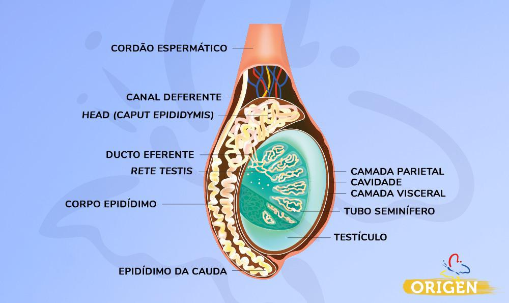
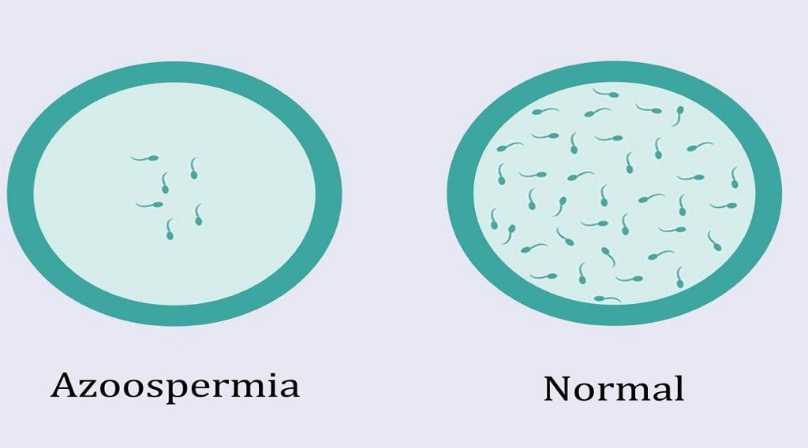
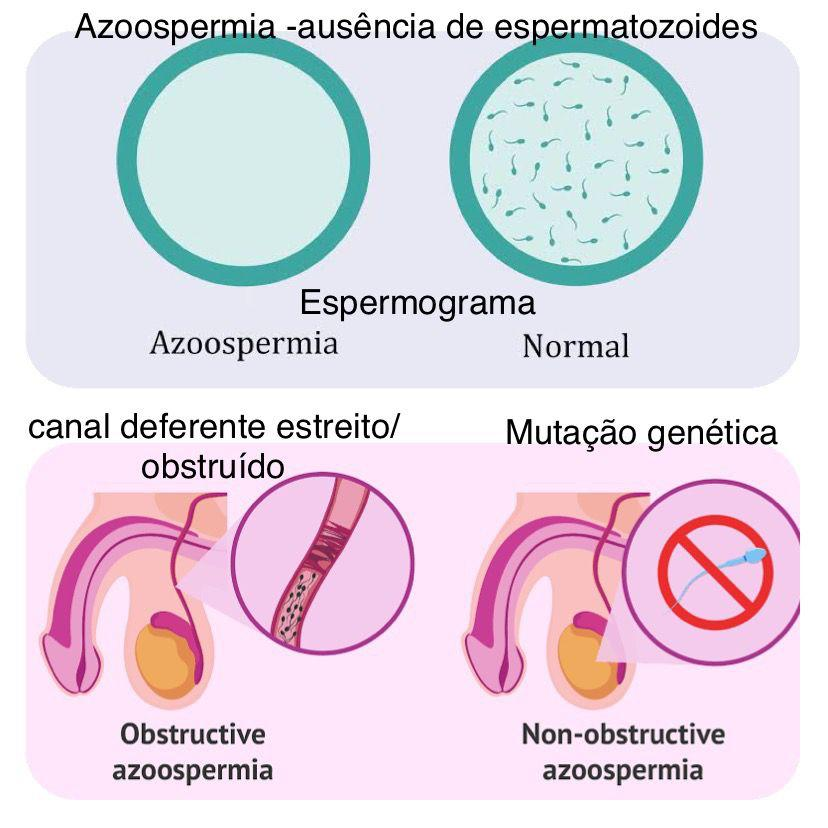

A fragmentação do DNA espermático acontece quando os espermatozoides libertam fragmentos de seu DNA no sêmen, reduzindo consideravelmente o potencial fértil do homem. Quando um paciente com a fragmentação do DNA espermático consegue engravidar a mulher de maneira natural, existe o risco de ocorrer abortos.
Em certos casos, não ocorre produção de espermatozóides no testículo ou, os canais que permitem o seu transporte (canais deferentes) encontram-se obstruídos, devido a doenças genéticas (como o síndrome de Klinefelter, ou a fibrose quística).
As principais causas para a azoospermia podem ser divididas em dois quadros: obstrutivo e não obstrutivo.
O que é azoospermia obstrutiva?
Neste caso, a azoospermia acontece quando há uma barreira que impede a circulação dos espermatozóides entre o testículo e a uretra.
Devido à obstrução, os espermatozóides não conseguem chegar até a ejaculação.
Entre os motivos mais comuns para que esse percurso seja bloqueado está o procedimento de vasectomia, quando os dutos dessa passagem são propositalmente bloqueados, como método contraceptivo. Mas o bloqueio também pode ser causado por infecções nos testículos e epidídimos ou até ser congênito, em meninos que nascem sem uma parte dos dutos que transportam os espermatozóides.
Na azoospermia obstrutiva o homem produz espermatozóides normalmente, mas esses espermatozóides não conseguem chegar até a uretra para serem ejaculados.
O que é azoospermia não obstrutiva?
Diferente do quadro obstrutivo, na azoospermia não obstrutiva os dutos estão intactos. O problema, nesse caso, está na falta de espermatozóides nos testículos.
É importante entender que esperma (sêmen) não é sinônimo de espermatozóide. O esperma é o líquido ejaculado, enquanto os espermatozóides são os gametas ejaculados junto com o sêmen.
Também vale lembrar que a azoospermia não obstrutiva pode ser causada por diversos fatores, como agentes tóxicos, problemas congênitos, hormonais e genéticos.
Quais são os exames indicados para identificar a azoospermia?
O espermograma é o exame que avalia a produção e a qualidade dos espermatozóides. No homem com azoospermia, o número de espermatozóides será zero.
No espermograma, a análise seminal tem dois aspectos: microscópico e macroscópico. O microscópico avalia as condições dos espermatozoides e o macroscópico avalia o líquido seminal.
Para investigar as causas da azoospermia, outros exames são necessários, como dosagem hormonal, testes genéticos, ultrassonografia da bolsa escrotal e, em apenas alguns casos, a ressonância magnética da pelve.
Quais são os tratamentos para azoospermia?
É claro que cada tratamento vai depender da identificação de cada um dos vários diagnósticos possíveis para o problema, mas vamos citar aqui os mais comuns.
No caso da azoospermia obstrutiva, em princípio o tratamento consiste na desobstrução anatômica do bloqueio que impede a passagem do espermatozóide. É essencial ressaltar que, para os casos de vasectomia, por exemplo, há cirurgias de reversão.
Na impossibilidade de desfazer esse bloqueio, também é possível coletar os espermatozóides diretamente do epidídimo (duto dentro do aparelho reprodutor masculino), onde eles ficam armazenados, para posteriormente realizar tratamentos de reprodução assistida como a fertilização in vitro (FIV).
Já nos quadros de azoospermia não obstrutiva, o tratamento vai depender do diagnóstico do médico especialista e pode envolver desde reposições hormonais até a recomendação de restrição para alguma substância, entre outros diversos caminhos possíveis.
Em algumas situações não é possível reverter a azoospermia não obstrutiva e nestes casos lança-se mão de uma biópsia de testículo, onde existe 50% de chance de se achar alguns espermatozoides para realizar a fertilização in vitro com a injeção intracitoplasmática de espermatozóide (ICSI).


![]()
![]()